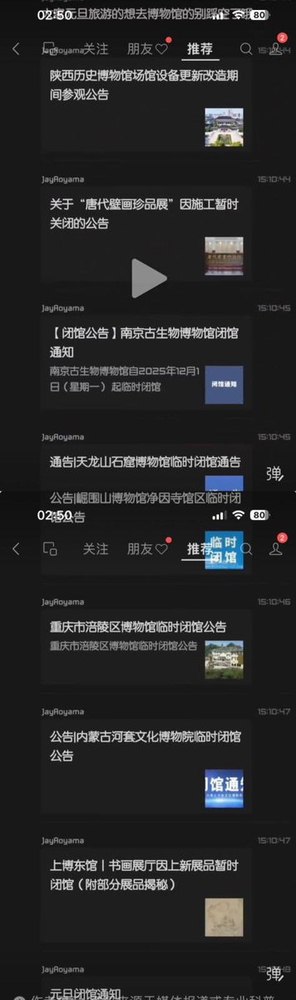

拱北靠北
@psyofsouthwest
@dayangelcp 他们总不能把恐龙头骨也卖了吧

李承鹏（大眼哥）
@dayangelcp
南京博物院出事后，出现了以下荒诞而在意料之中的画面：
陕西历史博物馆因施工暂时关闭的公告
南京古生物博物馆临时闭馆通知
关于“唐代壁画珍品展”因施工临时关闭的公告
天龙山石窟博物馆临时闭馆通告
崛围山博物馆净因寺馆区临时闭馆
内蒙古河套文化博物院临时闭馆公告 https://t.co/6rDUv8w0Gg